Project Lead Martin Hollis wrote this document dated February 3, 1994, but he said that's a typo and the year must actually be 1995. That still makes this the earliest Goldeneye 007 document we have.
(Source)
Principal photography on the GoldenEye movie had only started a couple weeks earlier on January 16, 1995.
(Source)
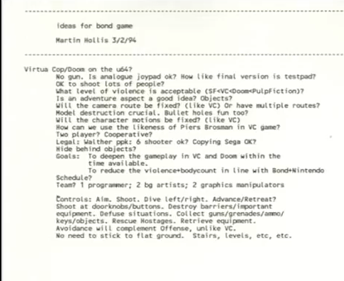
This page shows that Virtua Cop and Doom were the primary early inspirations for Goldeneye 007.
At this point Hollis was questioning if GoldenEye would be a rail shooter like Virtua Cop or free roaming like Doom.
We do already see some ideas that would make it into GoldenEye. Actions such as collecting weapons and keys and rescuing hostages are noted here.
At this time it wasn't even clear if the in-development Ultra 64 (Nintendo 64's prototype name) would have an analog stick on controllers. It was also unknown how many controller ports it would have.
Design Document
Rare co-founder Tim Stamper asked Martin Hollis to create a game design document which Hollis did in April 1995. (Source)
This document communicated a more detailed vision for Goldeneye 007 than the earlier notes. It really emphasized that GoldenEye's primary influence would be Virtua Cop, but also
used Virtua Cop as a baseline to describe how GoldenEye would be different. Some ideas such as shooting mines to detonate them would make it into the final game. Others such as an usable fire extinguisher would not.
Below is a reupload of the nine page design document originally hosted here. You'll see a few parts are blacked out.
We'll talk about that more below the document.
Unfortunately some of the mission synopses are missing, but there's good news — the book Nintendo 64 Anthology by Math Manent contains the full design document. But there's also bad news — it's printed so small that it's
kind of hard to read. So I've created a reproduction of the design document that fills in the missing parts. The very last page is not in the book, but that's just a list of
filming locations so it's not really relevant to us anyway. The new parts to look for below are missions 4, 5, 6, 10, 11, 12, 13, 14, and 15.
Reproduction Design Document
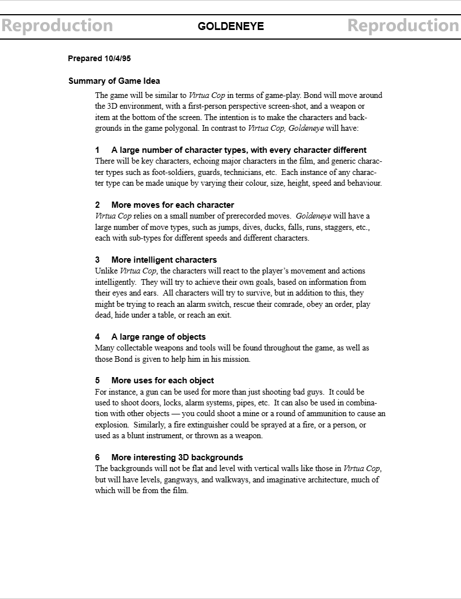
Page 1
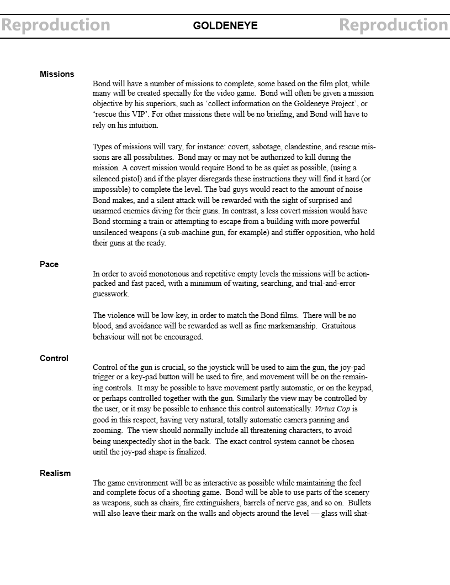
Page 2
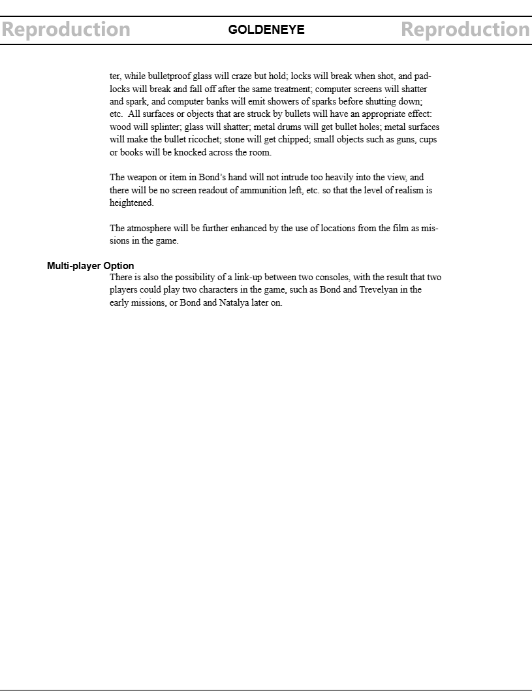
Page 3
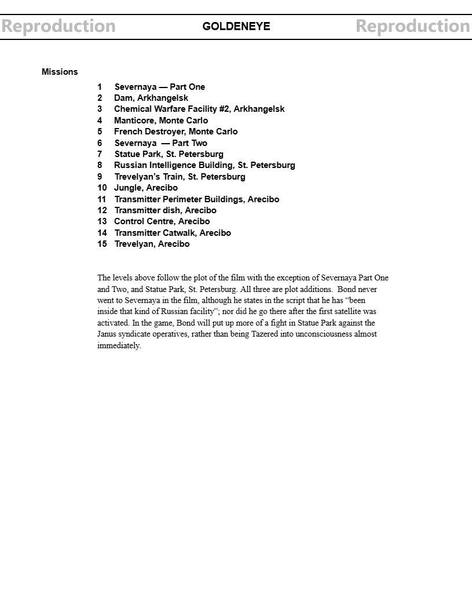
Page 4
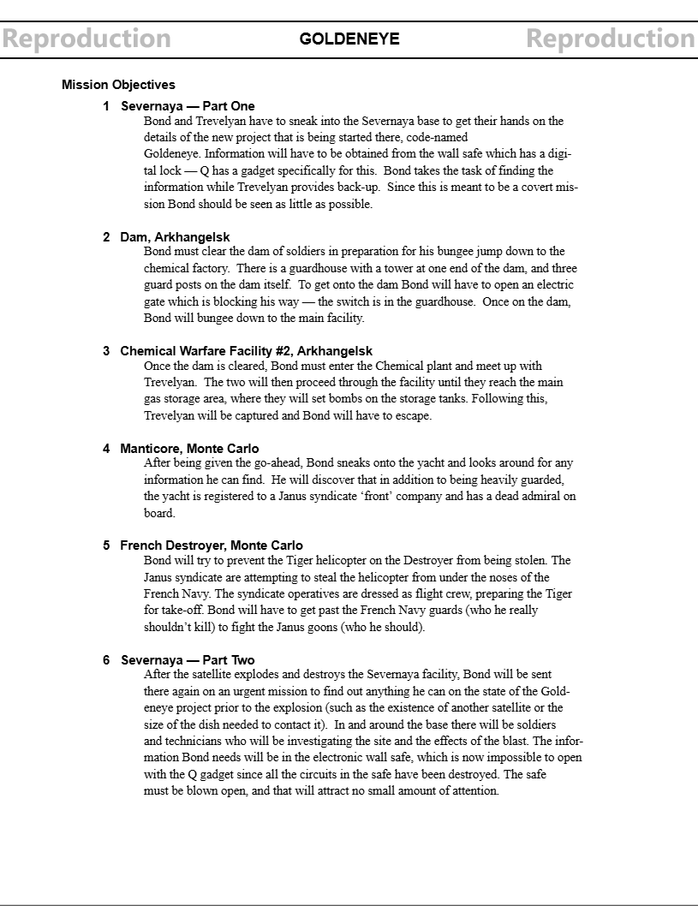
Page 5
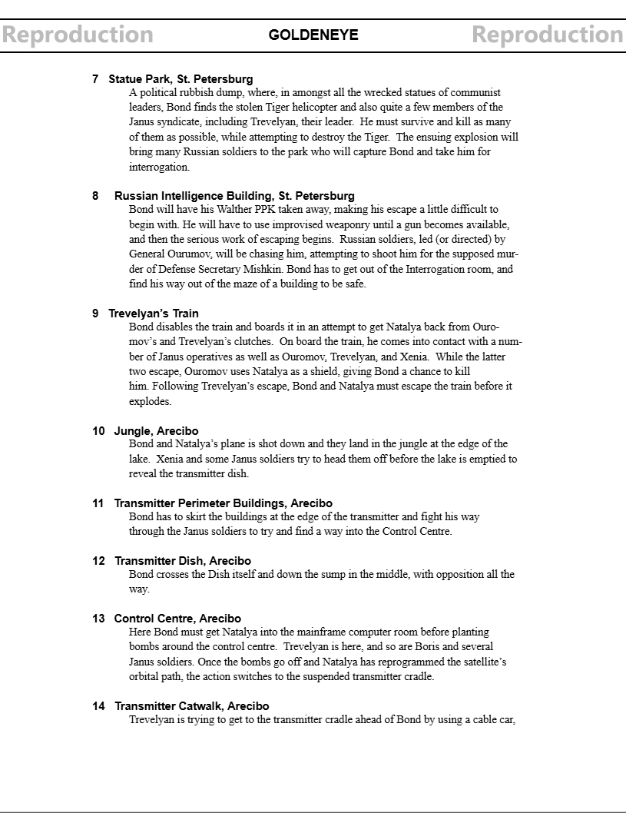
Page 6
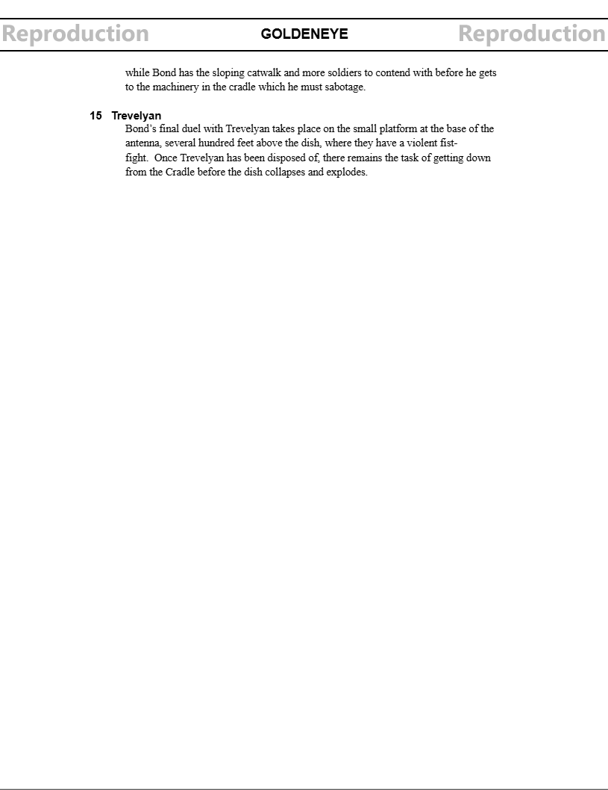
Page 7
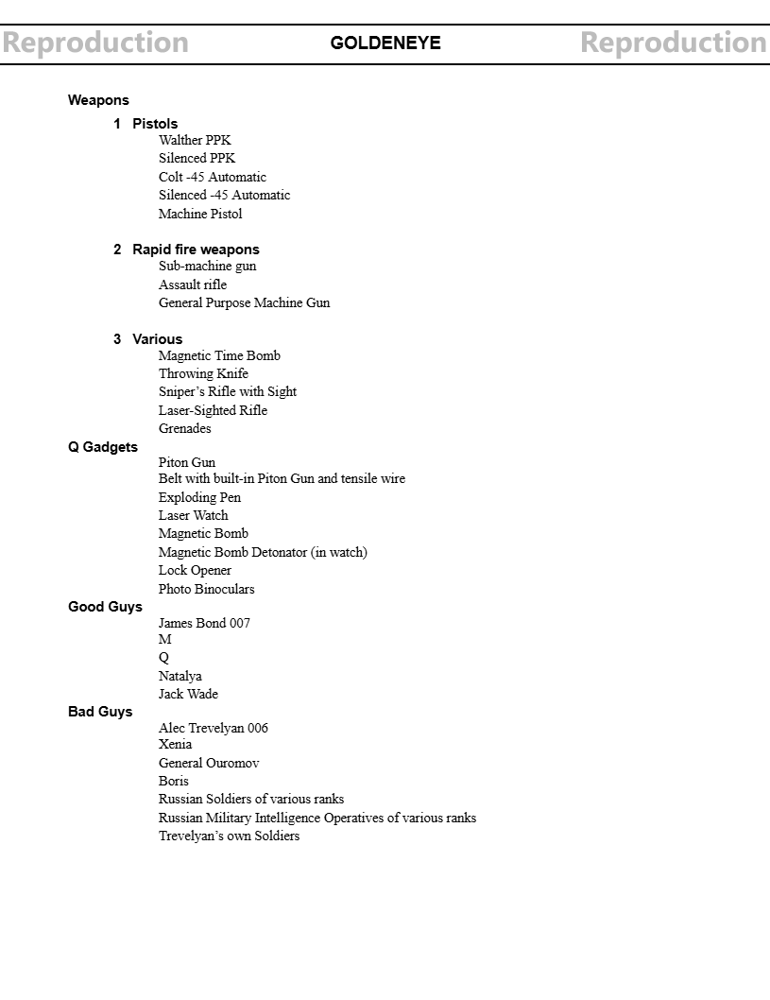
Page 8
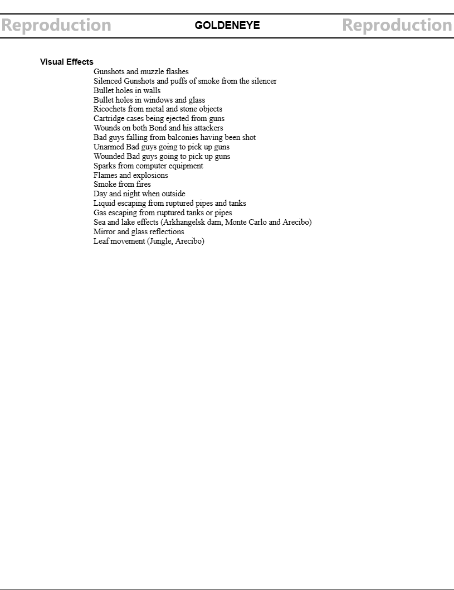
Page 9
Design Document Analysis
It's quite interesting to compare the design document to the final game. It was always planned to have two Severnaya missions, but one would have been the very start of the game! You also
would have been fighting alongside Trevelyan both there and all the way through Facility. That would have been difficult to implement. It would be hard to do that even today.
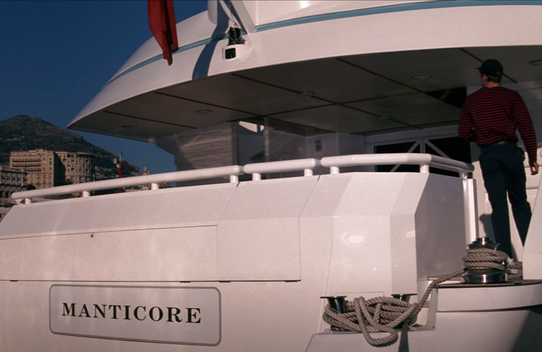
Manticore, a yacht Bond briefly visits in the movie, was planned as level. I'm curious as to why the developers dropped this. Maybe it would have been too small. Maybe they just didn't feel like making two boat levels.
Ultimately Silo took Manticore's place.
It's strange that there's no mention of the St. Petersburg streets and the tank chase, the biggest action sequence of the movie. Was Martin Hollis thinking that would be too much to take on?
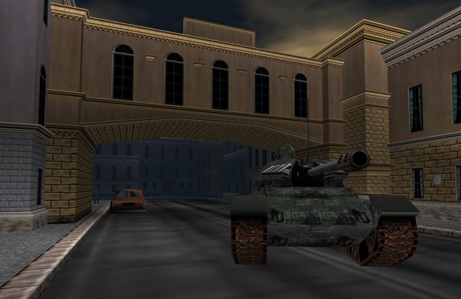
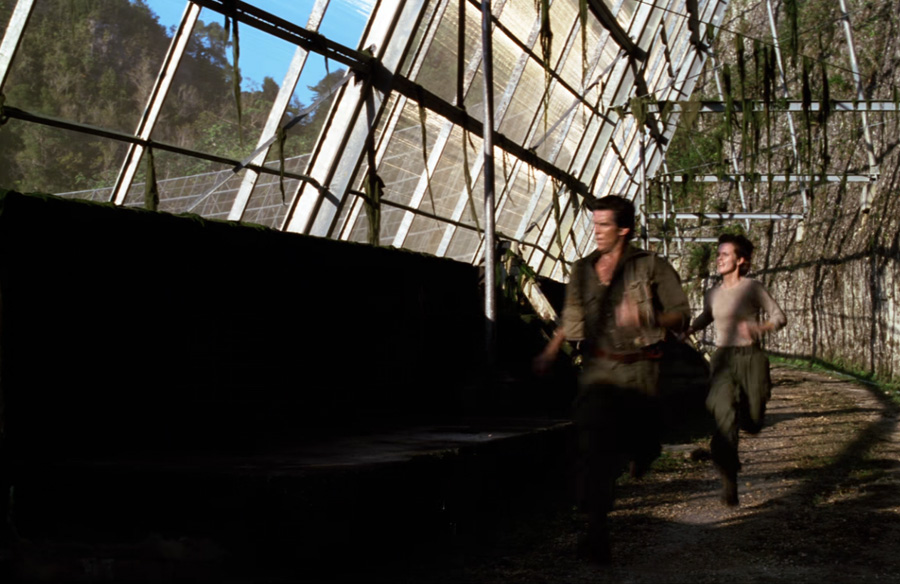
Cuba would have originally spanned 6(!) levels instead of 4. In the end Perimeter and Dish were discarded and Caverns was added. The final boss fight was consolidated with Cradle instead of being its own level.
The setup files for the multiplayer level Temple are actually called "dish" internally, showing how that level name got recycled. Citadel's setup name is "cat" with cat perhaps originally standing for "catwalk."
Something else interesting is the document discusses a "Multi-player Option," but it's not the kind we think of today. It describes two consoles linking up and two players beating missions together. In modern times we call that co-op.
While that feature didn't make it into GoldenEye, it did make it into spiritual successor Perfect Dark.
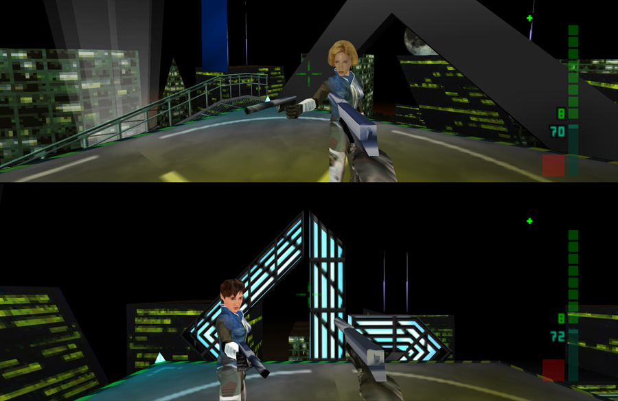
One more thing the document says is that "there will be no screen readout of ammunition left, etc. so that the level of realism is heightened." Having players mentally keep track of
their ammo would be asking a bit much, so an ammo counter was eventually added. But I think this explains why there's an "ammo on-screen" option in the pause menu
and why GoldenEye has such a minimalist HUD in general.
Karl's Notes
These are background artist Karl Hilton's notes shown by Martin Hollis at his GoldenEye Postmortem presentation.
Unfortunately the quality is poor but luckily GoldenEye: Decoded made a high-res reproduction. The original must have been made around spring of 1995.
At this point Karl Hilton was certain that the levels which would become Surface, Bunker, Control, Facility, Frigate, and Archives would make it in the game. I'm not sure if "Outside Arecibo" refers to Jungle or Cradle here.
For the first time we see a mention of St. Petersburg's streets as a possible location. Other possible locations were Manticore, Statue Park, Rail Depot, and Valentin's Location.
I assume Valentin's Location is referring to his nightclub that Bond visits in the movie.
In the final game we don't visit Valentin's nightclub. He only gets a shipping container in Statue and a run-down room in Streets. Poor guy.


{kind=link}
{kind=link}
{kind=link}
{kind=link}
{kind=link}
{kind=link}
{kind=link}
{kind=link}
{kind=link}